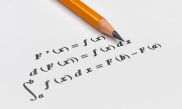

El cálculo diferencial es una parte del cálculo infinitesimal y del análisis matemático
que estudia cómo cambian las funciones continuas según sus variables cambian de estado.
El principal objeto de estudio en el cálculo diferencial es la derivada.1 Una noción
estrechamente relacionada es la de diferencial de una función.
El estudio del cambio de una función es de especial interés para el cálculo diferencial,
en concreto el caso en el que el cambio de las variables es infinitesimal, esto es,
cuando dicho cambio tiende a cero (se hace tan pequeño como se desee). Y es que el cálculo
diferencial se apoya constantemente en el concepto básico del límite.
El paso al límite es la principal herramienta que permite desarrollar la teoría del cálculo
diferencial y la que lo diferencia claramente del álgebra. Desde el punto de vista filosófico
de las funciones y la geometría, la derivada de una función en un cierto punto es una medida
de la tasa en la cual una función cambia conforme un argumento se modifica. Esto es, una derivada
involucra, en términos matemáticos, una tasa de cambio. Una derivada es el cálculo de las pendientes
instantáneas de f(x) en cada punto
Una función de una variable es diferenciable en punto si su derivada existe en ese punto;
una función es diferenciable en un intervalo si lo es en cada punto
perteneciente al intervalo. Si una función no es continua en c, entonces
o puede ser diferenciable en c; sin embargo, aunque una función sea continua en c,
puede no ser diferenciable. Es decir, toda función diferenciable en un punto c es continua
en c, pero no toda función continua en c es diferenciable en c (como f(x) = |x| es continua,
pero no diferenciable en x = 0).
Una derivada es un término que se refiere a una relación entre dos o más variables. Uno de
los conceptos más importantes de las derivadas es que éstas son iguales cuando se expresan
en términos de alguna otra constante. También es posible determinar las derivadas de una
función, pero esto puede ser muy difícil porque las funciones suelen tener condiciones de
contorno complejas.
Una tabla de derivadas ayuda a determinar el valor de una determinada cantidad determinando
qué efecto tiene la variable de entrada en la variable de salida. En muchos casos, un cálculo
de derivadas le ayudará a predecir el comportamiento de una determinada ecuación o integral.
Para muchos inversores es necesario estar al tanto de los cambios en el mercado de valores,
por lo que pueden optar por utilizar la tabla de derivadas como herramienta para determinar
el valor de las acciones por ejemplo.
El cálculo diferencial es una rama de la matemática que permite resolver diversos problemas
donde el cambio de las variables se puede modelar en un continuo numérico para determinar,
a partir de ello, la variación de estos elementos en un instante o intervalo específico.
Al aplicarlo, es posible determinar el momento en que se da una tendencia al alza o a la
baja del mercado a partir de los datos del índice bursátil, determinar la velocidad máxima
que un vehículo puede alcanzar en una carretera, el comportamiento que puede mostrar a
largo plazo la concentración de una mezcla o predecir el número de horas-hombre necesarias
para un nivel de producción industrial; los anteriores son ejemplos de la amplia variedad
de problemas que pueden resolverse gracias a esta disciplina.
En cálculo diferencial y análisis matemático, la derivada de una función es la razón de
cambio instantánea con la que varía el valor de dicha función matemática, según se modifique
el valor de su variable independiente. La derivada de una función es un concepto local,
es decir, se calcula como el límite de la rapidez de cambio media de la función en cierto
intervalo, cuando el intervalo considerado para la variable independiente se torna cada vez más pequeño.
Por eso se habla del valor de la derivada de una función en un punto dado.
Un ejemplo habitual aparece al estudiar el movimiento: si una función representa la posición
de un objeto con respecto al tiempo, su derivada es la velocidad de dicho objeto para todos los
momentos. Un avión que realice un vuelo transatlántico de 4500 km entre las 12:00 y las 18:00,
viaja a una velocidad media de 750 km/h. Sin embargo, puede estar viajando a velocidades mayores
o menores en distintos tramos de la ruta.
En particular, si entre las 15:00 y las 15:30 recorre 400 km, su velocidad media en ese tramo es
de 800 km/h. Para conocer su velocidad instantánea a las 15:20, por ejemplo, es necesario calcular
la velocidad media en intervalos de tiempo cada vez menores alrededor de esta hora: entre las
15:15 y las 15:25, entre las 15:19 y las 15:21.
Entonces el valor de la derivada de una función en un punto puede interpretarse geométricamente,
ya que se corresponde con la pendiente de la recta tangente a la gráfica de la función en dicho
punto. La recta tangente es, a su vez, la gráfica de la mejor aproximación lineal de la función
alrededor de dicho punto. La noción de derivada puede generalizarse para el caso de funciones de más
de una variable con la derivada parcial y el diferencial.